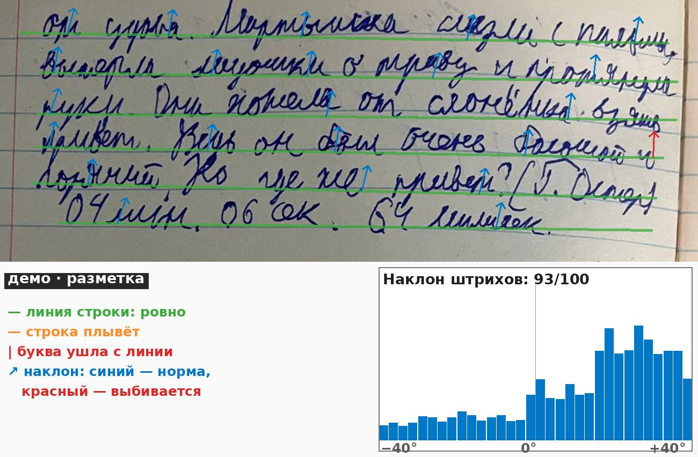

Зелёные/красные линии — линия строки, стрелки — наклон штрихов, гистограмма — распределение наклона.
Буквы смотрят в одну сторону — наклон держится стабильно.
Разброс наклона вертикальных штрихов ±4° (средний наклон +13°).Строчные буквы почти одной высоты — текст выглядит собранно.
Высота строчных (x-высота) ≈ 40 px, разброс 29%.Слова стоят на одной линии, строки не уползают.
Отклонение букв от линии строки 15% высоты буквы, увод строки 0.5× высоты.Пробелы очень неравномерные: слова слипаются или разлетаются.
Средний пробел между словами 0.7× высоты буквы, разброс 72%.Строки идут ровными «рельсами».
Расстояние между строками ≈ 1.8× высоты буквы, разброс 5%.Толщина линии стабильная — рука движется ровно.
Оценка по толщине линии на фото: разброс 10%.Элементы букв одинаковые и отдельные — читается легко.
Регулярность элементов письма (разброс размеров 44%, слипшихся участков 1.0%).Автоматическая оценка по геометрии письма на фото (наклон, высота, строка, пробелы, толщина линии). Это не графология и не оценка личности; результат зависит от качества снимка. Точный разбор — у тренера.